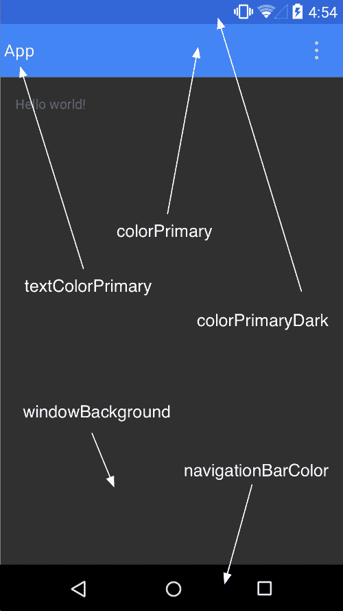

Material Design是谷歌新的设计语言，谷歌希望寄由此来统一各种平台上的用户体验，Material Design的特点是干净的排版和简单的布局，以此来突出内容。
Material Design对排版、材质、配色、光效、间距、文字大小、交互方式、动画轨迹都做出了建议，以帮助设计者设计出符合Material Design风格的应用。
Material Design设计语言鼓励大家使用充满活力的鲜艳色彩，并在同一界面建议使用三种色调，并保障有一个强色调，强色一般处于处于视图最底层，例如状态栏或者actionbar。通过强色调形成鲜明的对比，更容易突出内容的重要性。对于文字色彩的取值，Material Design建议在浅色背景上采用黑色，在深色背景上采用白色。重要信息和标题采用87%透明度，次要文字采用54%透明度，而更次要的说明文字可以采用26%的透明度。对于想特别突出或者可点击的文字，建议使用强色调。不同层级的视图，可以通过阴影来凸显。对于带有操作且内容突出的区域，可以使用cardview进行隔离，对于内容不太重要或者操作比较单一的区域，可以使用分割线进行隔离。
更多详情请见Material Design文档：
中文版网站 http://design.1sters.com/
英文版 http://www.google.com/design/spec/material-design/introduction.html
作为我们开发者，最关心的还是如何在项目中使用Material Design风格：
targetSdkVersion 和 targetSdkVersion 为21android:Theme.Material谷歌官方我们提供了三种配色风格的Material Design样式：
Theme.MaterialTheme.Material.LightTheme.Material.Light.DarkActionBar我们也可以继承系统提供的Material Design样式，进行配色修改：

android:colorPrimaryDark 应用的主要暗色调，statusBarColor默认使用该颜色android:statusBarColor 状态栏颜色，默认使用colorPrimaryDarkandroid:colorPrimary 应用的主要色调，actionBar默认使用该颜色android:windowBackground 窗口背景颜色android:navigationBarColor 底部栏颜色android:colorForeground 应用的前景色，ListView的分割线，switch滑动区默认使用该颜色android:colorBackground 应用的背景色，popMenu的背景默认使用该颜色android:colorAccent 一般控件的选种效果默认采用该颜色android:colorControlNormal 控件的默认色调 android:colorControlHighlight 控件按压时的色调android:colorControlActivated 控件选中时的颜色，默认使用colorAccentandroid:colorButtonNormal 默认按钮的背景颜色android:textColor Button，textView的文字颜色android:textColorPrimaryDisableOnly RadioButton checkbox等控件的文字android:textColorPrimary 应用的主要文字颜色，actionBar的标题文字默认使用该颜色主题不仅可以对Application和Activity使用，也可以对某一个控件单使用，或者是在xml布局中给一个根节点控件设置android:theme属性，来修改它和它所有子控件的主题。
如果我们要对特定控件实例做自定义修改，更建议大家可以通过控件自身的API进行设置修改。
Material Design主题只有在API级别为21以上才可使用，在v7支持库中提供了部分控件的Material Design主题样式，如果想使应用在android的所有版本上都能统一风格，我们可以对控件效果做自定义或者使用一些第三方的兼容包。目前最有效的做法是针对21版本创建value－21资源目录，使用Material Design风格主题，在其他版本使用v7的Theme.AppCompat.Light风格主题。